GÖRÜNTÜ İZLEME TUTANAĞI
Şişli Polis Merkezi Amirliğinin 2022/1035 suç sayılı YANKESİCİLİK konusuna istinaden müşteki Kuveyt uyruklu Mubarek M M M ALAJMI isimi müşteki şahsın tercüman eşliğinde verdiği beyanında 22/04/2022 günü Saat:20:30 sıralarında Halaskargazi Caddesi Üzerinde no:158 civarında beyaz bir araçtan 4 bayan şahsın indiğini ve bebek arabasındaki çocuğumla oynama başladıklarını çocuğumu kaçıracaklarını zannedip müdahale ettiğimde benim çevremi sardılar ve hızlıca indikleri beyaz araca bindiklerini şüphelenerek üzerimi kontrol ettiğimde 3000 dolar, 100 dinar, ehliyet,kimlik,banka kartlarımın olduğu cüzdanının olmadığını belirtmesi üzerine; Şişli Asayiş Büro Amirliği ekipleri olarak şüpheli beyaz araç üzerinde yaptığımız çalışmalarda son 3 günde aynı renk aynı şekilde Harf Grubu 3 Hane Rakam Grubu 2 Hane olan bir aracın 2
defada aynı şekilde Feriköy bölgesi idaresinde teşebbüste kaldığını bilmemiz üzere araç plakası üzerinde yaptığımız çalışmalarda;
TEŞEBBÜS-1
Dışa Aktar 26.04.2022 13-58-55 isimli kamerada 20/04/2022 günü Saat:11:59 sıralarında Cumhuriyet caddesi Babil sokak kesişiminde teşebbüste kalan Harf Grubu 3 Hane Rakam Grubu 2
Hane olan aracın plakası 34 BFB 65 plakalı beyaz Fort Fiesta olduğu tarafımızca tespit edilmiş
araç cumhuriyet caddesi üzerinden Babil sokak kesişimi tarafına yaklaşarak ilerlediği devamında nispet sokak tan tekrar cumhuriyet caddesine çıkarak geri geri Babil sokak kesişimine geldiği Babil sokak içerisinde yine yabancı şahısları sıkıştırma yöntemi ile yankesicilik konusu gerçekleştireceği esnada vatandaşların müdahalesi ile vatandaştan alınan cep telefonu fotoğrafınada bakılarak şahısların kaçtıkları anlaşılmıştır.
34 BFB 65
11:59:11
FOTO-1
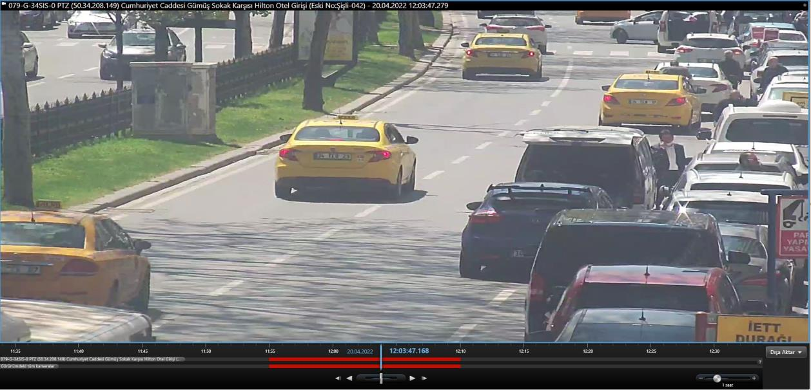
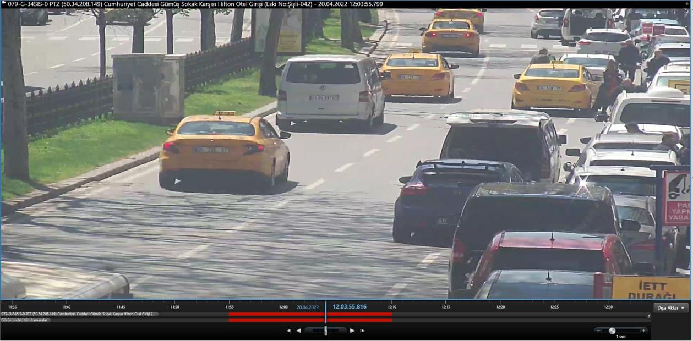
şüpheli 34 BFB 65 plakalı araç cumhuriyet caddesi üzerinde seyiri devam eder.
11:59:37
FOTO-2
şüpheli 34 BFB 65 plakalı araç nispet sokak tan cumhuriyet caddesine çıkma anı
12:03:47
FOTO-3
şüpheli 34 BFB 65 plakalı araç nispet sokak tan cumhuriyet caddesine çıkıp geri geri Babil sokak kesişimine yanaşma anı
12:03:55
FOTO-4
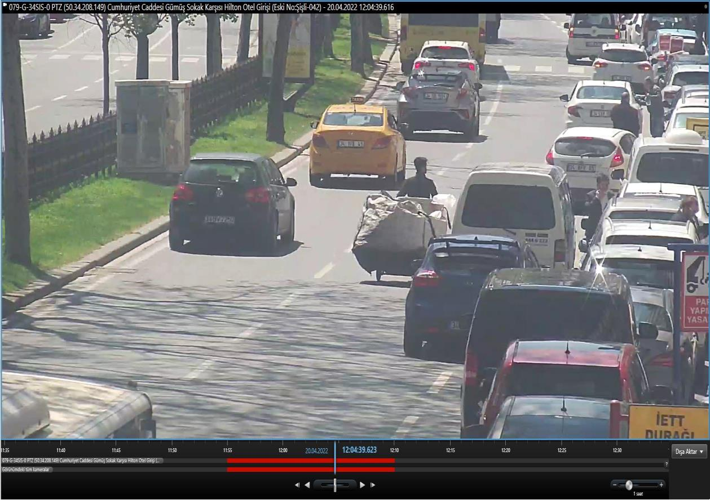
şüpheli 34 BFB 65 plakalı araç nispet sokak tan cumhuriyet caddesine çıkıp geri geri Babil sokak kesişimine yanaşma anı
12:04:10
FOTO-5
şüpheli 34 BFB 65 plakalı araç cumhuriyet caddesi Babil sokak kesişimine dönme anı 12:04:39
FOTO-6
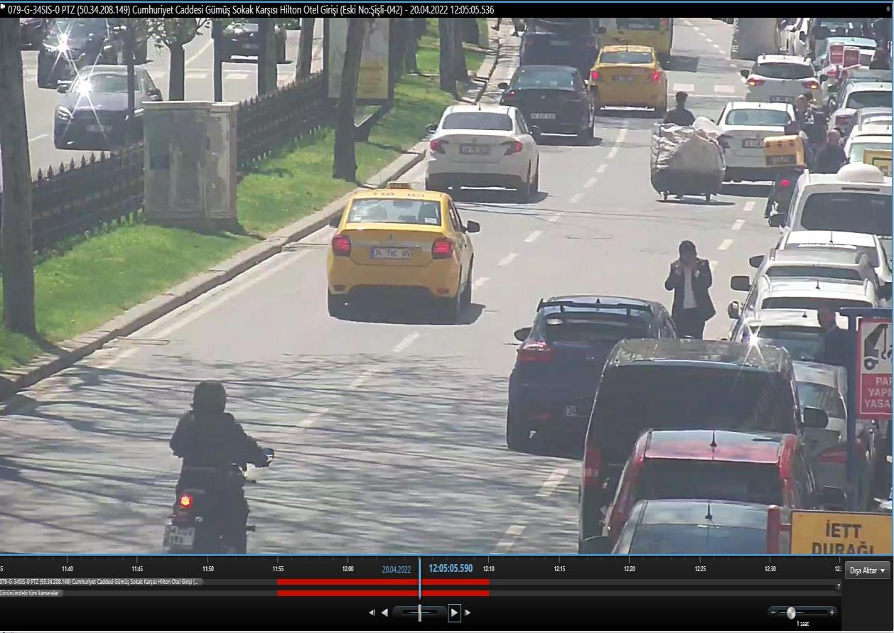
şüpheli 34 BFB 65 plakalı araç cumhuriyet caddesi Babil sokak kesişimine dönme anı 12:04:45
FOTO-7
Vatandaşın şüpheli aracı sokak içerisinde müdahale anında fotoğraf çekme anı
12:05:05
FOTO-8
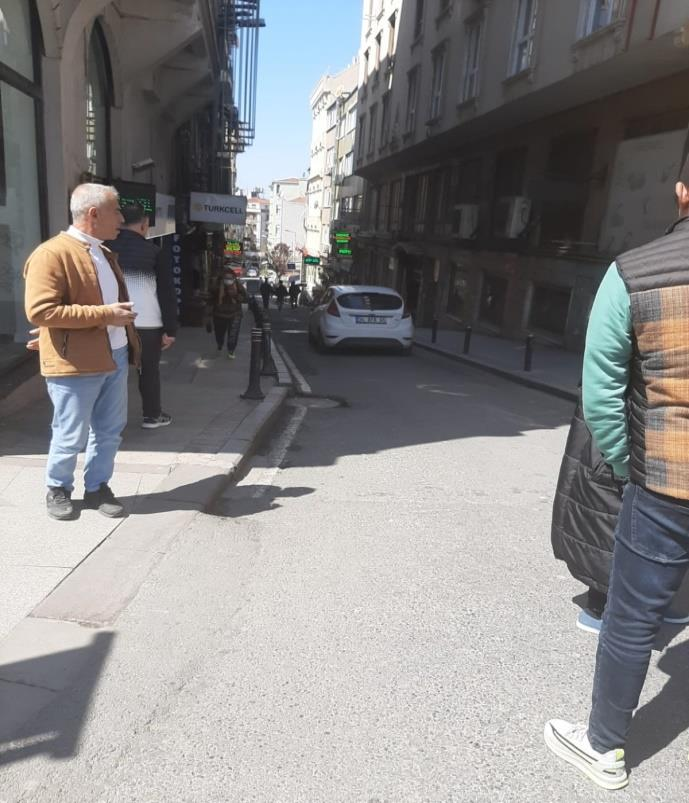
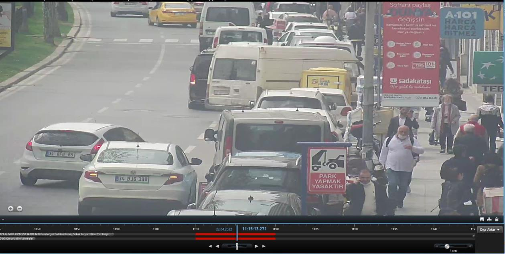
Vatandaşın şüpheli aracı sokak içerisinde müdahale anında çektiği fotoğraflar
TEŞEBBÜS-2
Dışa Aktar 26.04.2022 13-59-54 isimli kamerada Aynı beyaz renkli aracın 22/04/2022 günü Saat:11:15 sıralarında aynı şüpheli 34 BFB 65 plalakalı beyaz aracın cumhuriyet caddesi üzerinden Babil sokak kesişimine yanaştığı araçtan 3 kapalı bayananın inerek yabancı uyruklu şahısları sıkıştırma yöntemi ile ceplerindeki cüzdanı alma eylemini gerçekleştireceği esnada tekrar vatandaşları müdahalesi ile eylemi gerçekleştiremeyerek 3 kapalı şüpheli bayan indikleri beyaz renkli araca binmeye çalıştıklarını vatandaşlar ile aralarında tartıştıkları akabinde beyaz aracın kısa mesafe ilerlediği bayanlarında arkasından gittikleri araca bindikleri şoföründe arkdan plakaya bakmasınlar diye düşünerek bagaj kısmını açarak açık şekilde hızla uzaklaştığı tarafımızca görülmüştür.
Şüpheli 34 BFB 65 plakalı aracın cumhuriyet caddesi babail sokak kesişimi tarafına yanaşma anı 11:15:13
FOTO-1
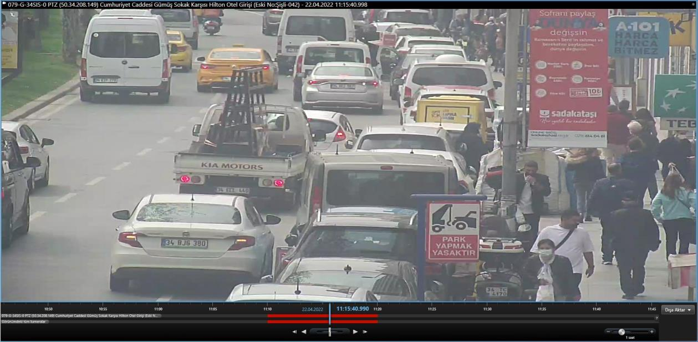
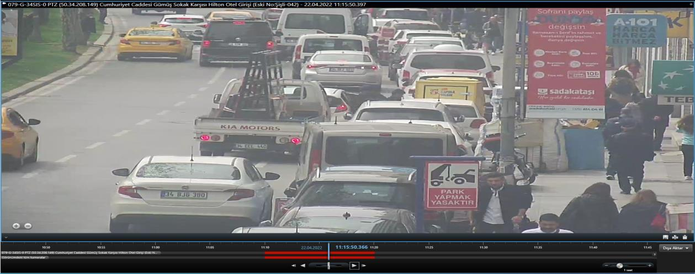
Şüpheli 34 BFB 65 plakalı araçtan siyah kapalı bir şahsın inme anı
FOTO-2
Araçtan inen siyah çarşaflı şahıs
11:15:40
FOTO-3
Araçtan inen siyah çarşaflı şahıs
arabaya tekrar binme anı
11:15:50
FOTO-4
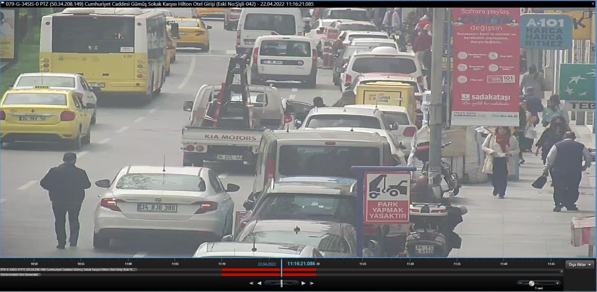
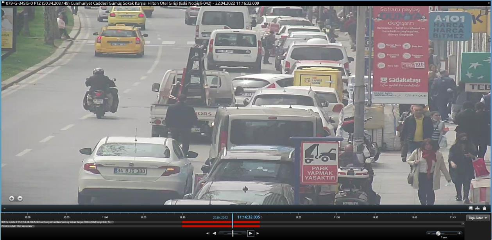
Araçtan tekrar 3 adet
tanınmamak için yüzleri kapalı 3
çarşaflı kadının inme anı
11:16:17
FOTO-5
Araçtan tekrar 3 adet
tanınmamak için yüzleri kapalı 3
çarşaflı kadının inme anı
11:16:21
FOTO-6
Şüpheli araçtan inen şüpheli
Şüpheli aracın şüpheli şahısları
şahısları Babil sokak
indirdikten sonra Babil sokağa
kesişiminde yabancı şahısları
dönme anı
sıkıştırma yaptığı vatandaşın
müdahale etme anı
11:16:32
FOTO-7
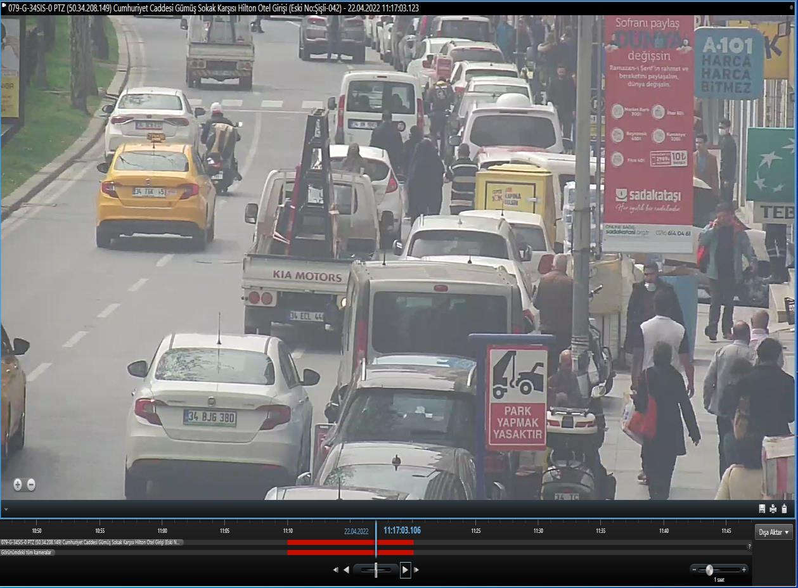
Şüpheli araç vatandaşlar
müdahale ettiğinde tekrardan
cumhuriyet caddesine çıkış
yaptığı şüpheli şahısların
gelmesini beklediği an
11:16:49
FOTO-8
Araçtan inen kapalı şahısların
araca yönelme ve
vatandaşların müdahale etme
anı
11:17:03
FOTO-9
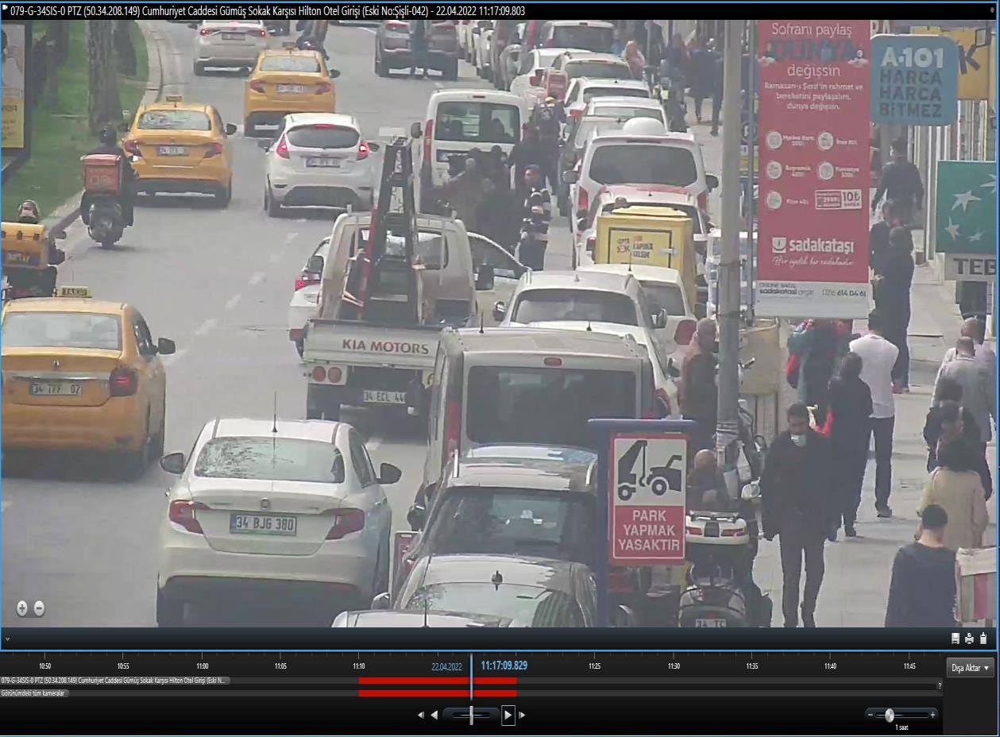
Vatandaşların çektiği fotoğraf
Araç şüpheli şahısları bırakıp
Şüpheli şahısların
gitme anı
vatandaşlarla münakaşa
yaptığı an
FOTO-10
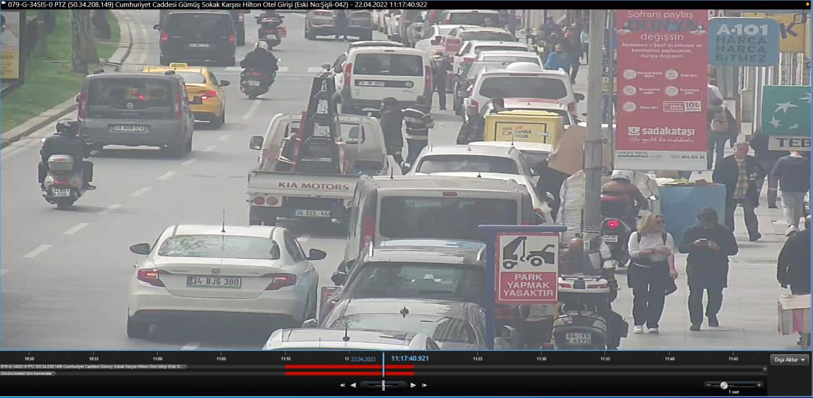
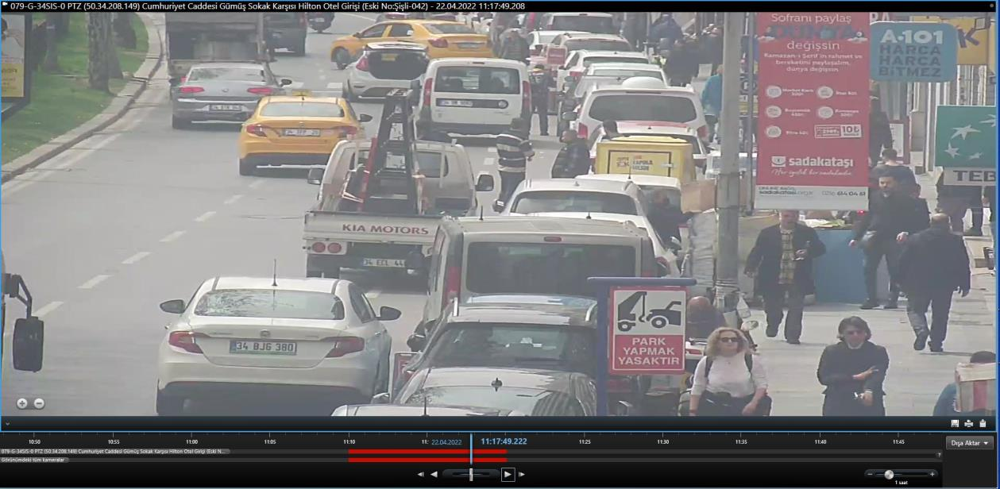
Şüpheli şahısların araca
binme anı
FOTO-11
Şüpheli aracın vatandaşlar arkadan
plakasını almasın diye bagajını açtığını düşündüğümüz an
FOTO-12
Şüpheli aracın bagaj açık halde hızla uzaklaşma anı
FOTO-13
20/04/2022 günü ve 22/04/2022 günü tarihlerinde Feriköy PMA bağlı cumhuriyet Mahallesi Babil sokak kesişimindeki 2 adet YANKESİCİLİK TEŞEBBÜSÜNDE kullanılan 34 BFB 65
plakalı beyaz renkli fort fiesta değerlendirildiğinde 22/04/2022 günü Şişli Polis Merkezi Amirliğinin 2022/1035 suç sayılı YANKESİCİLİK konusuna bakıldığında araç akşam vakti olması dolayısıyla plaka
okunması
elverişsiz
olduğundan
055-G-34SIS-0_PTZ Halask_yet_Parki_adre_-_10157129_5724166.h264 isimli kamerada aracın beyaz renkli fort fiesta olduğu ve plakası göründüğü kadarı ile Harf Grubu 3 Hane Rakam Grubu 2 Hane olarak gözüktüğü bu yüzden bölgemizde aynı yöntem ile yukarıdada bahsettiğimiz harf ve rakam grubu şekil olarakta birbirine benzediğinden bu aracın plakasınında 34 BFB 65 olduğu tarafımızca tespit edilmiştir.
055-G-34SIS-0_SBT-1 Hala_yet_Parki_adre_-_10157082_0813985.h264 isimli kamerada 22/04/2022 günü beyaz renkli fort fiesta aracın halaskargazi caddesi üzerinde taksim yönüne doğru ilerlerken şüpheli bayan şahısları indirdiği ardından refüj üzerinden tekrar halaskargazi caddesi şişli yönüne geçiş yaptığı ve müşteki şahısların belirttiği no:185 civarında beklediği bayan şahısların sonrada refüje geçerek bekleme yaptıkları karşıya geçmeye vakitleri varken geçmedikleri müşteki şahsın bebek arabası ile refüje geldiği o esnada şüpheli şahıslar ile refüjde bir etkileşim olduğu ardından karşıya geçtikleri esnada şüpheli araçta hareket ederek önlerine kırdığı ve şüpheli şahısların araca binerek hızlıca kırmızı ışıkta geçip uzaklaştıkları ardından müşteki şahısların telaşlı şekilde etrafa baktıkları taksi durdurmaya çalıştıkları ve durdurdukları taksiye binerek karakola gitmiş
oldukları tarafımızca anlaşılmıştır.
055-G-34SIS-0_PTZ Halask_yet_Parki_adre_-_10157129_5724166.h264 isimli kamerada 22/04/2022 günü Saat: 21:44:15 de araç şişli tarafından taksim yönüne doğru gelme anı FOTO-1
Şüpheli araç plakasının harf grubu
3 hane rakam grubu 2 hane olduğu
görüldüğü an
20:44:15
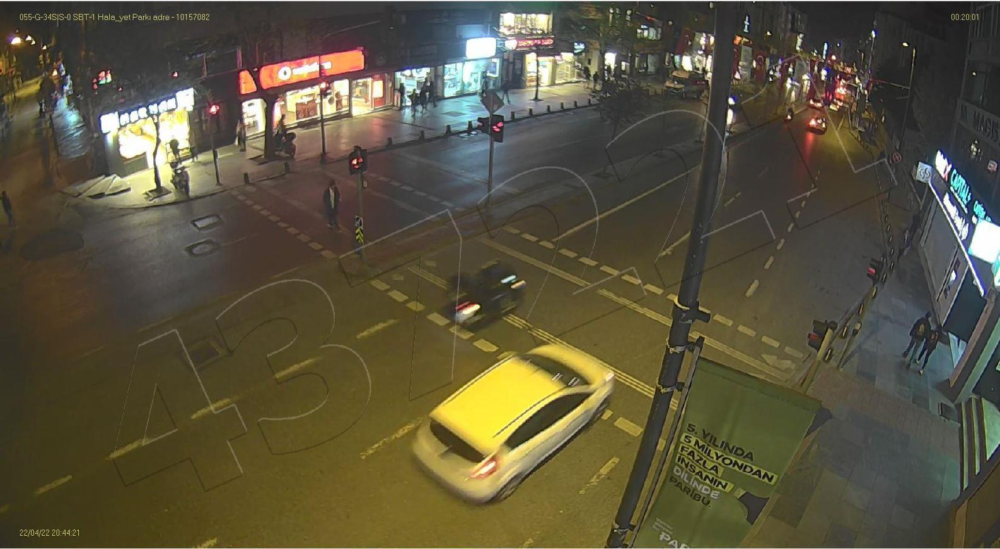
FOTO-2
Şüpheli aracın dizayn ve amblem
belirtilerinden fort fiesta marka
araç olduğu anlaşıldığı an
20:44:16
055-G-34SIS-0_SBT-1 Hala_yet_Parki_adre_-_10157082_0813985.h264 isimli kamerada 22/04/2022 günü Saat 20:44:21 de şüpheli aracın gelme anı FOTO-1
20:44:21
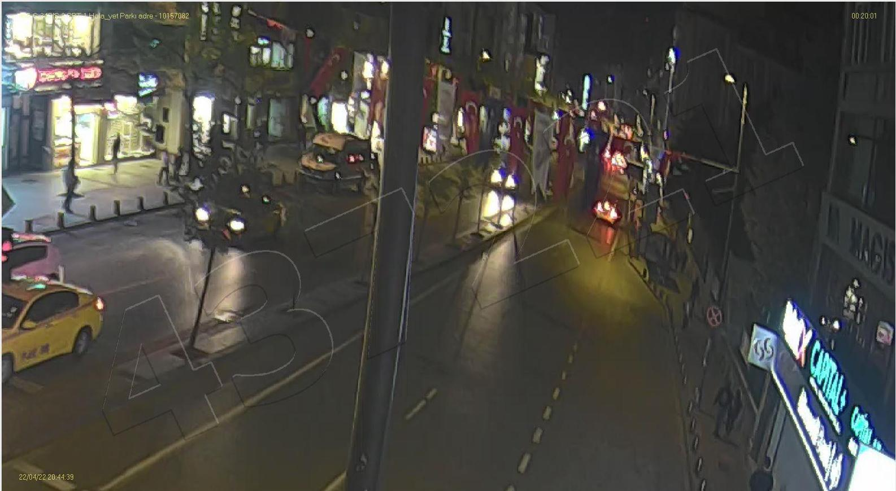
FOTO-2
Sol arka park lambasının
yanmadığı gözüktüğü an
20:44:26
FOTO-3
Şüpheli aracın durduğu ve şüpheli
şahısların inme anı
20:44:39
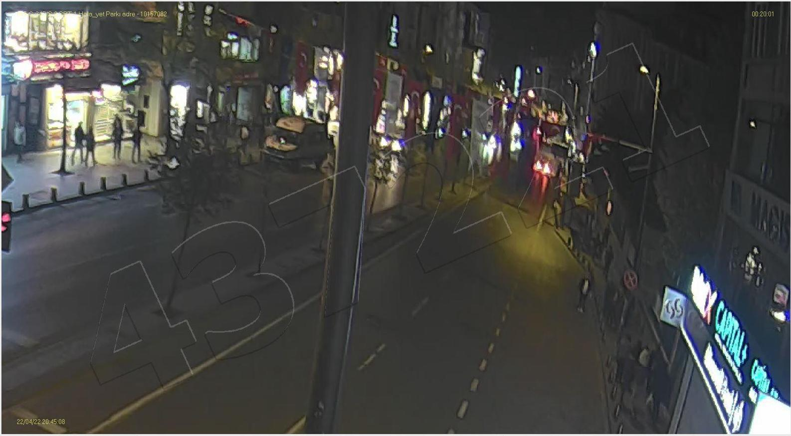
FOTO-4
Şüpheli aracın refüj
üzerinden geçerek
taksim istikametinden
şişli istikametine
geçiş anı
20:44:58
FOTO-5
Şüpheli aracın
müştekinin belirttiği
halaskargazi caddesi
No: 185 civarında
bekleme yaptığı an
20:45:08
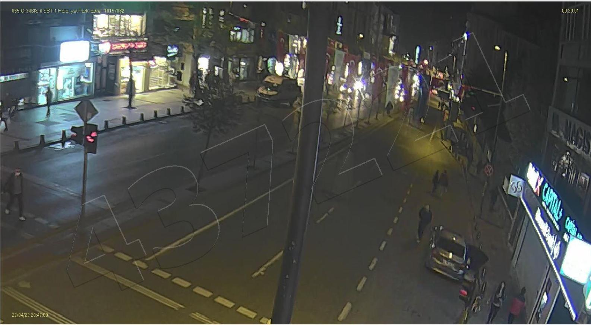
FOTO-6
Şüpheli şahısların
refüje geçip 1.5-2
dakika zaman
harcadıkları an
20:45:22
FOTO-7
Şüpheli
Müşteki bebek
şahısların
arabalı şahsın
beklediği an
geçiş anı
20:47:00
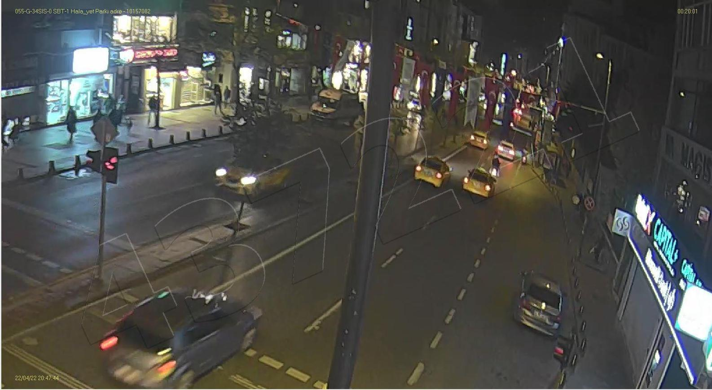
FOTO-8
Müşteki ve şüpheli
şahısların mülaki
olduğu an
20:47:07
FOTO-9
Müşteki ve şüpheli
şahısların karşıya
geçme anı
20:47:44
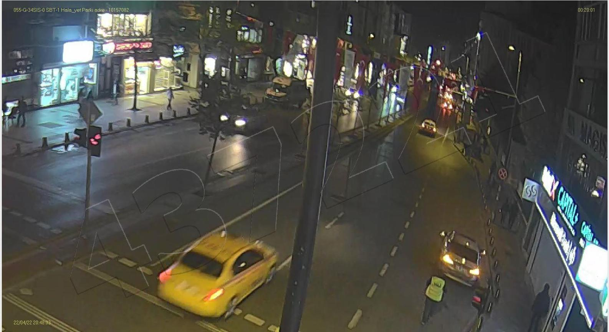
FOTO-10
Müşteki ve şüpheli
şahısların karşıya
geçerken şüpheli
aracın önlerine
doğru aracı
hareket ettirdiği an
20:47:49
FOTO-11
Şüpheli şahısların sağ
arka kapıdan hızlıca
araca binme anı
20:48:03
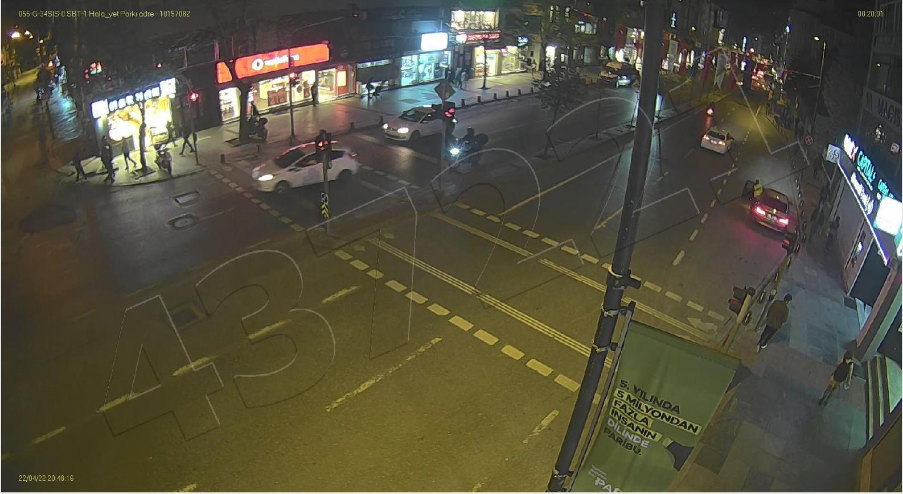
FOTO-12
Şüpheli aracın
uzaklaşma anı
20:48:07
FOTO-13
Şüpheli aracın kırmızı
ışıkta bile hızlıca
geçme anı
20:48:16
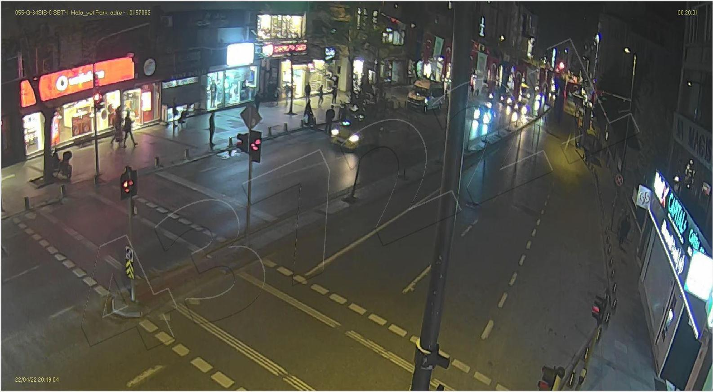
FOTO-14
Müştekilerin telaşlı
telaşlı etrafa bakma
anları
20:48:50
FOTO-15
Müştekinin taksi
durdurmaya çalıştığı
an
20:49:04
FOTO-16
Müştekinin karakola
gitmek için taksi
durdurduğu an
20:49:09
İş Bu Görüntü İzleme Tutanağı altıbirlikte imza altına alınmıştır.28/04/2022 günü Saat:14:00
245178
326486
479736
P.M
P.M
P.M